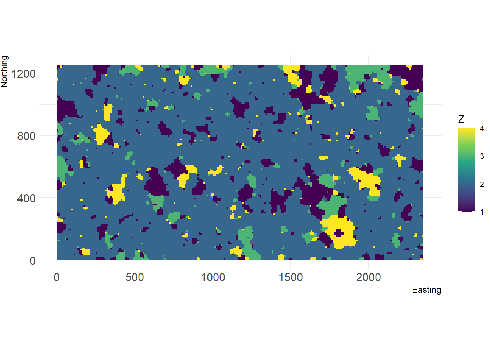
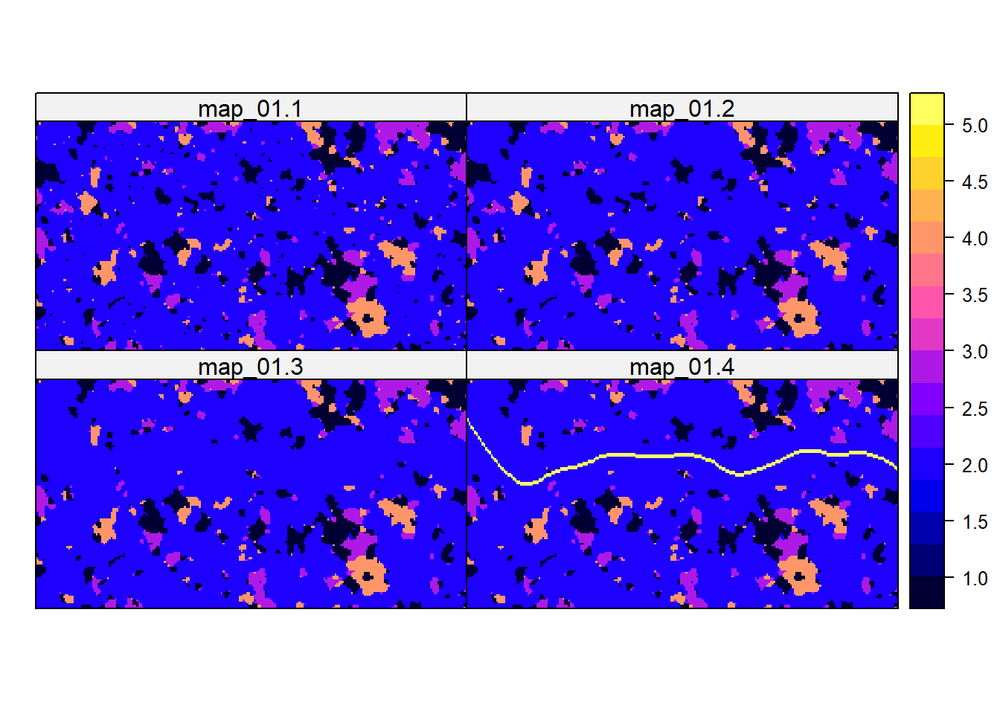
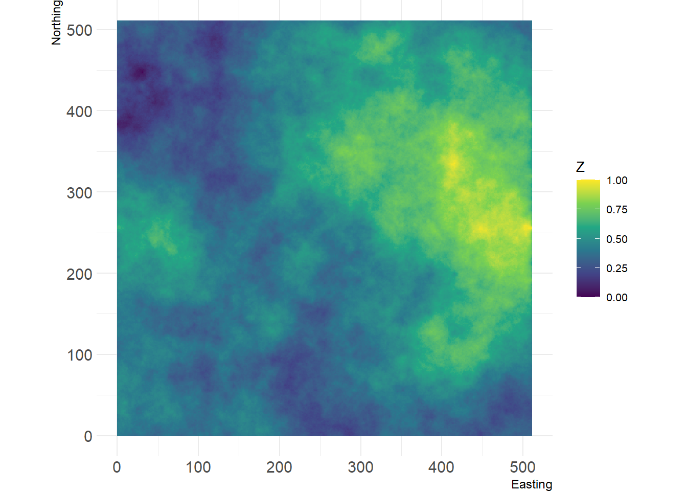
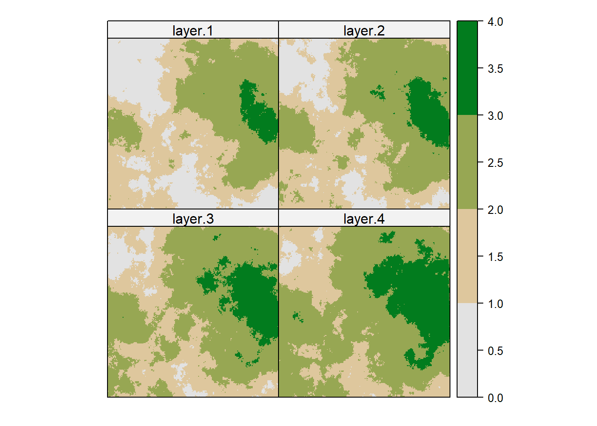

Here, we quickly show you how we created the dynamic landscapes from
Tutorial 4 using the package NLMR (Sciaini et al. 2018). For the road scenario, we
used a random cluster nearest-neighbour algorithm to generate the
neutral landscape, and for the urbanisation scenario, we used the
midpoint displacement algorithm. The NLMR package is currently only
availlable on GitHub and still has raster dependencies. We hope to
switch to terra soon.
First of all, load the required packages and set the relative path from your current working directory to the RS directory.
# load packages
library(purrr)
library(raster)
library(rasterVis)
library(SDMTools)
library(NLMR)
library(landscapetools)
# relative path from current working directory:
dirpath = "Tutorial_03/"In this scenario, we envisioned a landscape mosaic with woodland patches and a grassland matrix. Over time, smaller woodland patches are being deforested and converted into grassland. Later, a corridor is cleaned from woodland patches and a road is built through the landscape.
We create a landscape with four different land cover types using
random cluster neutral landscape simulator from the NLMR
package (Sciaini et al. 2018). As the
simulator is stochastic, your landscape will look different every time
you run the algorithm and also different from the landscape shown here.
To obtain the same landscape as shown in this example, you have to set
the seed for the random number generator. Maybe you also want to play
around with some landscape settings.
We then save the landscape as ascii map in the Inputs folder of our working directory so that we can use it for running RangeshiftR simulations.
# Set this seed if you want to obtain the same landscape as shown here:
set.seed(54321)
r <- nlm_randomcluster(235,125, p=0.5, neighbourhood = 4, ai = c(0.12, 0.72, 0.08, 0.08), rescale = F)
show_landscape(r)
# write to ASCII:
r@file@nodatavalue <- -9999
writeRaster(r, format="ascii", filename = paste0(dirpath, "Inputs/map_01"), datatype = 'INT1S', overwrite = F)
Here, we chose the most abundance land cover type as the grassland matrix and all other land cover types as suitable woodland habitat patches. Then, we assign patch numbers and save the numbered patches as ascii.
rp <- r
rp[values(r)==2] <- 0
rp[values(r) %in% c(1,3,4)] <- 1
patches <- ConnCompLabel(rp)writeRaster(patches, format="ascii", filename = paste0(dirpath, "Inputs/patches_01"), datatype = 'INT1S', overwrite = F)We create three more maps with increasing landscape conversion.
First, smaller woodland patches are removed and converted to grassland matrix.
rm_patches <- as.integer(names(table(values(patches))[table(values(patches))<5]))
r1 <- r
r1[values(patches) %in% rm_patches] <- 2
patches1 <- patches
patches1[values(patches1) %in% rm_patches] <- 0writeRaster(r1, format="ascii", filename = paste0(dirpath, "Inputs/map_02"), datatype = 'INT1S', overwrite = F)
writeRaster(patches1, format="ascii", filename = paste0(dirpath, "Inputs/patches_02"), datatype = 'INT1S', overwrite = F)Second, a corridor is cleared from woodland. For this, we arbitrarily define a horizontal line across the landscape and remove all patches that touch this line.
corridor <- c(40,45)
rm_patches <- as.integer(names(table(patches1[corridor[1]:corridor[2],])))
r2 <- r1
r2[values(patches) %in% rm_patches] <- 2
patches2 <- patches1
patches2[values(patches2) %in% rm_patches] <- 0writeRaster(r2, format="ascii", filename = paste0(dirpath, "Inputs/map_03"), datatype = 'INT1S', overwrite = F)
writeRaster(patches2, format="ascii", filename = paste0(dirpath, "Inputs/patches_03"), datatype = 'INT1S', overwrite = F)Last, we simulate a road that is being build through the cleared corridor. This road is generated as B-spline between the middle points of closest patches above and below the corridor.
ext <- extent(r2)
x <- seq(ext@xmax/res(r)[1]-ext@xmin/res(r)[1])
upper <- as.matrix(r2)[(ext@ymin/res(r)[2]):corridor[1],]
y_up <- apply(upper,2,FUN=function(x){
temp <- which(x!=2)
if(length(temp)>0) return(temp[length(temp)])
else return(ext@ymin/res(r)[2])
})
lower <- as.matrix(r2)[corridor[2]:(ext@ymax/res(r)[2]),]
y_lo <- apply(lower,2,FUN=function(x){
temp <- which(x!=2)
if(length(temp)>0) return(temp[1]+corridor[2])
else return(ext@ymax/res(r)[2])
})
y <- (y_lo-y_up)/2+y_up
road <- loess.smooth(x, y, degree = 2, span = .25, evaluation = length(x))
r3 <- r2
for(col in 1:ncol(r3)){
build <- as.integer(road$y[col])
r3[build:(build+1),col] <- 5
}writeRaster(r3, format="ascii", filename = paste0(dirpath, "Inputs/map_04"), datatype = 'INT1S', overwrite = F)
# patches are the same as in the previous stepNow, we can plot all landscape maps as time series:
spplot(stack(r,r1,r2,r3))
In this scenario, we envisioned an urbanised landscape that gets abandoned over time with grassland and woodland expanding. The habitat maps should contain the following land cover types:
We can create a landscape with smooth transitions between different
landcover types using the midpoint displacement algorihtm the
NLMR package (Sciaini et al.
2018). Again, this simulator is stochastic and will produce
different landscapes every time you run it, unless you set a seed for
the random number generator.
# Set this seed if you want to obtain the same landscape as shown here:
set.seed(765)
r <- nlm_mpd(ncol = 513, nrow = 513, roughness = 0.65, rand_dev = 2)## Warning in nlm_mpd(ncol = 513, nrow = 513, roughness = 0.65, rand_dev = 2):
## nlm_mpd changes the dimensions of the RasterLayer if even ncols/nrows are
## choosen.show_landscape(r)
The midpoint displacement algorithm outputs a continuous map ranging 0-1. Now, we want to slice this landscape at different values to receive discrete patches of different land cover types. This can be done using a reclassification matrix. As the size of these patches should change dynamically over time, we need several reclassification matrices that define the thresholds for different time steps. This will require a little number crunching.
For convenience, we define a function that creates the required reclassification matrices. As arguments it takes the thresholds between 0-1 for each land cover type for the first and the last landscapes, and the desired number of time steps.
# Reclassification matrices
create_rclmatrices <- function(minmax_matrix,nr_dyntimes){
rcl_list <- list()
Nclasses <- nrow(minmax)
delta <- (minmax[,2]-minmax[,1])/(nr_dyntimes-1)
rcl_list[[1]] <- matrix(c(0,minmax[1:(Nclasses-1),1],minmax[,c(1,3)]),
ncol=3, byrow=FALSE)
if(nr_dyntimes>1){
for(i in 2:nr_dyntimes){
temp <- rcl_list[[i-1]][,2]+delta
rcl_list[[i]] <- matrix(c(0,temp[1:Nclasses-1],temp,minmax[,3]),
ncol=3, byrow=FALSE)
}
}
return(rcl_list)}Now, we define the thresholds (upper bounds) of four land cover classes for the first and the last time step, and create reclassification matrices from them:
# Columns: (1) min / (2) max upper bounds, (3) class ID
minmax <- matrix(c(0.35,0.20,1,
0.50,0.35,2,
0.80,0.65,3,
1.00,1.00,4),
ncol=3, byrow=TRUE)
rcl_list <- create_rclmatrices(minmax,nr_dyntimes=4)Now, we use the reclassify() function in the
raster package to reclassify the continuous landscape map
into a time series of land cover maps:
r_ts <- lapply(rcl_list, FUN = reclassify, x=r, include.lowest=TRUE)
r_ts <- stack(r_ts)
spplot(r_ts, col.regions=hcl.colors(nrow(minmax), "Terrain 2", rev=T), at = c(0,minmax[,3]))
Write rasters to ASCII files for use in RangeshiftR simulations:
#assign a number to this landscape
land_nr <- 1for (step in 1:length(rcl_list)) {
r_ts[[step]]@file@nodatavalue <- -9999
writeRaster(r_ts[[step]], format="ascii", datatype = 'INT1S',
filename = paste0(dirpath,"Inputs/habitat",land_nr,"_",step),
overwrite = F)
}